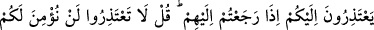
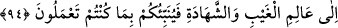

rivâyet edilmiştir. Bütün bunlar bu özelliklerin düşünmekle tesbit edilebilecek
özellikler olmadığını göstermektedir. Ayrıca bunları açıklayan bir haber de varid
olmamıştır ki onlara inanmamız gereksin.
Bunların keyfiyetini bilme konusunda fikir yürütmek bize bir şey kazandırmaz. Herkes
bunu yakında (âhirette) gözleri ile görecektir. Ya “Üzerlerine melekler iner. Onlara:
“Korkmayın, üzülmeyin, size vaadolunan cennetle sevinin!” derler.” (Fussılet,
41/30) âyetinde bahsedilen cennnetliklerden olarak görecektir, ya da meleklerin
kendilerine ellerini uzatarak: “Haydi canlarınızı çıkarın, Allah’a gerçek olmayanı
söylemenizden ve O’nun âyetlerine karşı büyüklük taslamanızdan ötürü, bu gün
alçaklık
azabıyla
cezalandırılacaksınız.”
(el-En‘âm,
6/93)
diyeceği
cehennemliklerden olarak görecektir. Fethu’l-karîb adlı eserde böyle zikredilmiştir.
Her şüpheye düşeni ancak Allah hidâyete eriştirir.[244]
94. Geri dönüp onların yanına geldiğiniz zaman size özür beyan ederler. De ki:
“Hiç özür dilemeyin, size asla inanmayız! Çünkü Allah bize sizin haberlerinizden
birçok şey bildirdi. Yaptığınızı Allah da görecek, Rasûlü de. Sonra görülmeyeni ve
görüleni bilenin huzuruna döndürüleceksiniz, O size yaptıklarınızı haber verecek.
Münâfıklar, Tebük gazvesinden “geri dönüp onların yanına geldiğiniz zaman size”
seferden geri kalmaları hususunda “özür beyan ederler.”
Âyette Rasûlullah (s.a.)’e ve ashabına hitab edilmektedir. Bu münâfıklar, seksen küsür
kişiydiler. Âyet, onlar özür beyan etmeden önce inmiştir. Bu yüzden Kâşifî âyete şöyle
mânâ verir: “Münafıklar senden özür dileyecek.”
Âyette “Medine’ye döndüğünüzde” denilmeyip “onların yanına geldiğiniz zaman”
buyurulması, münâfıkların Peygamber Efendimiz ve ashabının Medine’ye döndüklerinde
değil, kendilerinin yanına döndüklerinde özür beyan ettiklerini bildirmek içindir. Belki
de onların bir kısmı, daha Medine’ye dönmeden özür dilemeye kalkmıştır.
Ey Muhammed! “De ki hiç özür dilemeyin,” boşuna özür beyanında bulunmayın,
“size aslâ inanmayız.” öne sürdüğünüz özürler konusunda sizi asla tasdik etmeyiz.
“Çünkü Allah bize sizin haberlerinizden birçok şey bildirdi.” Allah, sizi
doğrulamamızı engelleyen bazı haberlerinizi, içlerinizde taşıdığınız o kötülük ve fesadı
bize vahiy yoluyla bildirdi.
Mesnevî’de şöyle denilir: